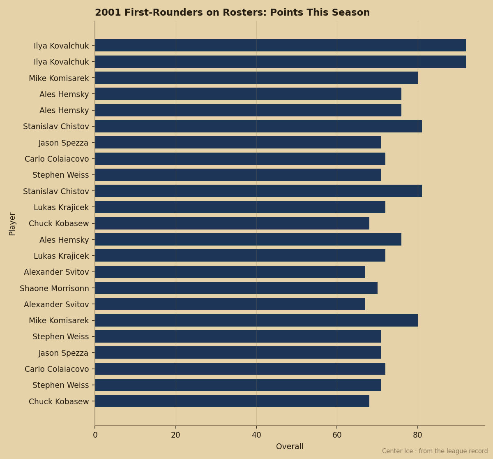

MTL
MTLThe 7th Pick Has 53 Points and Nobody Is Watching Because He Plays in Montreal
Mike Komisarek was up 6 on the Index and 29.8 minutes a night on a 12-24-4 team. A year ago he had 3 points.
 Pete LarocqueScouting editor · The Prospect File
Pete LarocqueScouting editor · The Prospect File
Mike Komisarek80 [217] finished last season with 3 points in 24 games at 11.8 minutes a night. Through 44 games this season he has 53 points at 29.8 minutes. The Development Index has him at +6, tied for the biggest jump on the Board alongside Gaborik, Cammalleri, and Nedorost.
The Canadiens are 12-24-4, 36 points, dead last in the Northeast, outscored 185-150. Komisarek carries 29.8 minutes a night on a roster that has no answer for the team in front of it.  Jose Theodore89 [989] is at 89 overall and
Jose Theodore89 [989] is at 89 overall and  Saku Koivu85 [498] at 85, and neither is moving. Komisarek is.
Saku Koivu85 [498] at 85, and neither is moving. Komisarek is.

Second Among the 2001 First Rounders
Among 2001 first-rounders on a league roster this season, only  Ilya Kovalchuk92 [509] has more points than Komisarek. Kovalchuk has 81 in 43 games. Komisarek has 53 in 44. The next closest is
Ilya Kovalchuk92 [509] has more points than Komisarek. Kovalchuk has 81 in 43 games. Komisarek has 53 in 44. The next closest is  Ales Hemsky76 [1096] with 26 in 45.
Ales Hemsky76 [1096] with 26 in 45.  Stanislav Chistov81 [518] is at 15 in 31.
Stanislav Chistov81 [518] is at 15 in 31.  Jason Spezza71 [227], the 2nd pick, has 14 in 34.
Jason Spezza71 [227], the 2nd pick, has 14 in 34.  Stephen Weiss71 [1068], the 4th, has 11 in 12.
Stephen Weiss71 [1068], the 4th, has 11 in 12.  Alexander Svitov67 [1026], the 3rd, has 3 in 31.
Alexander Svitov67 [1026], the 3rd, has 3 in 31.
Komisarek passed five men drafted ahead of him in a single offseason. His potential figure is 90. His overall today reads 80. That leaves 10 points of room in the Book, and the Index says he is already 6 above his base. If the Book catches his form, he sits at 86. If his potential holds, there are another 10 beyond that.
What the Grades Say
The Bureau's per-attribute grades on Komisarek tell you what the points are built on. He is at 90 in checking, 87 in speed, 86 in aggressiveness, 86 in puckhandling, 85 in shot power, 83 in passing. His 7 weakest attributes are fighting at 51, shootouts at 52, and faceoffs at 55. None of those sit in the middle of an offense. He skates, he hits, he moves the puck, he shoots. That is a top-pairing left side with a shot from the point, in 29.8 minutes, for $1.10M with one year left.
He turns 23 in January. He is 22 now. The next contract is his first real one and the price is going up from $1.10M whether or not Montreal makes the playoffs. They will not.
The Building
 Richard Zednik83 [1107] told The Tunnel's Marcus Bell this week about walking into the Canadiens' room and finding a group that keeps showing up. "The guys, Saku, everybody, we just... we play the next game," Zednik said. Komisarek is the guy whose next game looks different every time. He went from a 24-game tryout to 44 games and the most minutes of any defenseman on the roster. The team has lost 5 straight. He has been up all of them.
Richard Zednik83 [1107] told The Tunnel's Marcus Bell this week about walking into the Canadiens' room and finding a group that keeps showing up. "The guys, Saku, everybody, we just... we play the next game," Zednik said. Komisarek is the guy whose next game looks different every time. He went from a 24-game tryout to 44 games and the most minutes of any defenseman on the roster. The team has lost 5 straight. He has been up all of them.
The Canadiens hold 5 picks and 1 first in June. They will have a top-10 selection. Komisarek's 53 points and 29.8 minutes will not move that. But they will move his contract conversation, and they will move him up the Board on the other side of the table in whatever deal Montreal considers before the deadline.
The Book says 90 potential. The Index says +6. The record says 3 points last year and 53 this year. The only number that does not match is the one on the standings page.